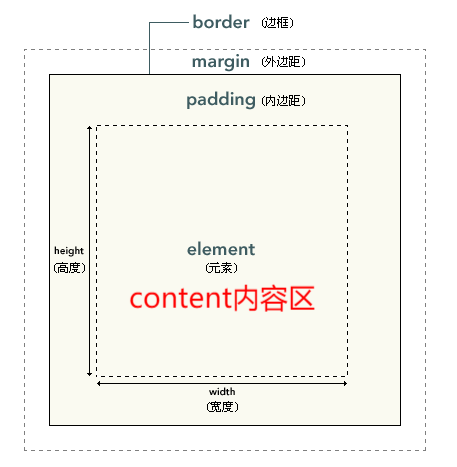
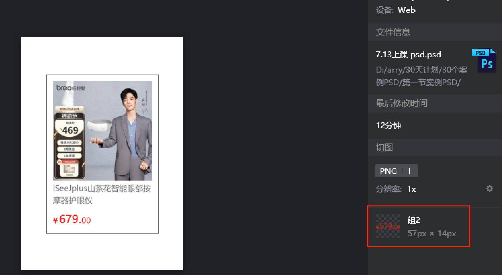
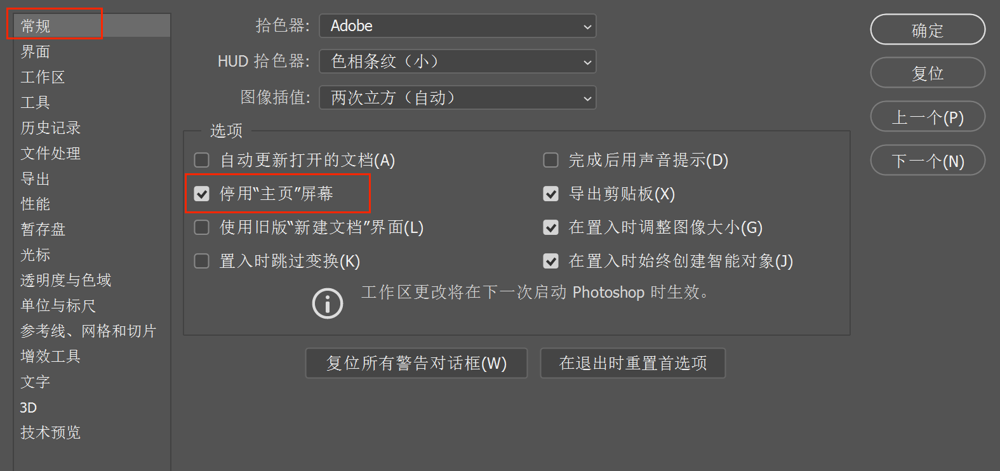

CSS盒子模型
盒子模型
1. 简介
- 网页本质上是由一个个盒子模型拼凑而成，每个盒子里放置相关的图片、文字、视频等内容
- 所有HTML标签都可以看成矩形盒子，具有盒子模型结构
- 盒模型由四个部分组成，分别是:
content、padding、border、margin- 盒模型有5个属性:宽
width、高height、边框boder、内边距padding、外边距margin- 注:
width、height不是盒子的总宽度，而是内容content的宽高
2. width和height属性
- width属性
- 单位:px、移动端开发(百分比、rem等单位)
- 如果不设置width,块级元素会被撑满(但不意味着width可以继承，是无法继承的)，非块级元素只能被内容撑开
- 块级元素的宽度可以设置，非块级元素无效
- height属性
- 如果不设置height属性，它将自动被其内容撑开，若没有内容，则height默认是0
- 块级元素的高度可以设置，非块级元素由内容撑开
- 总结
- 块级元素支持设置宽高，没有设置时，宽度自动撑满它的父元素；高度为内容高度，无内容时高度为0；
- 内联元素设置宽高无效，没有设置时，宽高由内容决定，无内容时宽高默认为0
类型 元素 性质 块级元素 h1~h6、p、div、ul/ol-li、dtdd、figure、figcaption、form、table、canvas、pre 独占一行、默认自上而下排列，可以设置宽高 内联元素/行内元素 a、span、lable、strong、em、mark、datalist 不会自占一行，宽高由内容撑起 特殊内联元素/行内块级元素/可替换元素 img、audio、video、input、select-option、textarea 不独占一行，可以设置宽高
3. border属性
- 三要素:线宽度、线型、线颜色
写法：border:2px solid red;以空格分隔
- 线型:
常见线型值 描述 solid 实线 dashed 虚线 dotted 点状线 double 双边框 groove 定义3D凹槽边框，效果取决于border-color的值 ridge 定义3D垄状边框，效果取决于boder-color的值 inset 3D inset 边框，其效果取决于 border-color的值 outset 3D outset 边框，其效果取决于 border-color 的值 none 无边框 hidden 隐藏边框
- 三要素的小属性：
- 注：是为了层叠大属性用的，进行局部修改
小属性 描述 border-width 线宽 border-style 线型 border-color 线颜色
- 四个方向的边框
大属性 小属性 描述 border-top border-top-width/style/color 上边框 border-right border-right-width/style/color 右边框 border-bottom 同上 下边框 border-left 同上 左边框 - 去掉边框
去掉左边框：border-left:none;
4. border的应用场景
- 制作三角形
- 不输入文字，把宽高设置为0
- 边框会聚集成正方形，每一边都是一个三角形，只要把其他三边设置成
transparent透明色就可以了div { width:0; height:0; border:30px solid transparent; border-top-color:red; } <body> <div></div> </body>
- 圆角属性border-radius
- 该属性单位通常为
px，表示圆角的半径- 还可以使用百分比做单位，表示圆角起始于每条边的哪里
- 不输入文本内容，设置圆角
- 赋值方式：
- 同时设置四个角
border-radius:20px;- 单独设置四个角
border-radius:10px 20px 30px 40px;分别代表“上右下左”- 单独设置每一个角：小属性
属性 描述 border-top-left-radius左上角 border-top-right-radius右上角 border-bottom-left-radius左下角 border-bottom-right-radius右下角 border-radius:50%; /*盒子为正方形时是圆*/ border-radius: px;/*圆，数值正方形宽度的一半*/ border-radius: 50%;/*盒子为长方形时是椭圆*/
5. padding内边距
- padding是边框内壁到内容之间的距离
- 数值的写法，以空格分隔
数值 说明 示范 四个数值 分别表示 上右下左padding:10px 20px 30px 40px==三个数值== 分别表示 上、左右、下padding:10px 20px 30px两个数值 上下、左右padding:10px 20px一个数值 四个边距相等 padding:10px;- 应用场景：如果需要设置父子间间距，即给父元素添加内边距来实现
- 小属性：四个方向可以分别设置，用来层叠大属性
属性 说明 padding-top上内边距 padding-right右内边距 padding-bottom下内边距` padding-left左内边距
padding-bottom:100%;可以使元素高度等于宽度
6. margin外边距
- 是盒子与其他盒子之间的距离
- 有四个方向可以分别设置
- 数值的写法与
padding相同
数值 说明 示范 四个数值 分别表示 上右下左padding:10px 20px 30px 40px==三个数值== 分别表示 上、左右、下padding:10px 20px 30px两个数值 上下、左右padding:10px 20px一个数值 四个边距相等 padding:10px;
- 小属性：四个方向可以分别设置，用来层叠大属性
属性 说明 margin-top上外边距 margin-right右外边距 margin-bottom下外边距 margin-left左外边距 注意：
- 如果数值是百分比，则是以其==父盒子的宽度==为基础的，等于父盒子宽度的百分之几
- margin的塌陷
- 又称为：外间距重叠/外边距合并/外边距穿透
- 兄弟元素之间，垂直方向：上下外边距出现塌陷
- 第一个元素的下外边距与第二个元素的上外边距会发生合并
- margin不会叠加，只以大值为准
- 解决办法：
- 任何一个元素加上
display:inline-block;- 把外边距只加在其中一个元素上
- 任意一个元素margin换成对应的
padding：把其中一个盒子外边距删除，然后套上透明色，内边距为原本的margin的盒子或者套上padding-top=margin的盒子
- margin在水平方向上不会塌陷
- 父子元素之间，垂直方向：上外边距塌陷
- 当一个元素包含在另一元素中时，如果父元素没有设置内边距或边框把外边距分隔开，他们的上外边距也会发生塌陷(合并)
- 原本子元素设置margin后会与父元素的边框产生距离，但因为发生塌陷，所以父子元素上边框重叠，子元素的外边距穿透出去，与父元素的外边距合并
- 塌陷是最大值为主
- 解决办法：
- 给父元素加上
overfiow:hidden;但子元素超出的部分会被隐藏- 给父元素添加
border边框；但占位宽会多两像素- 把子元素外边距删除，然后套上透明色，内边距为原本的margin的盒子或者套上
padding-top=margin的盒子- 还有更多方法，学完浮动、定位后会讲解
- 垂直或者父子元素的解决办法3：
<div class="box1"></div> <div style="padding-top:30px;"> <div class="box2"></div> </div>
- margin负值
- 讲完浮动后再学习
7. 去掉元素的默认样式
- 网页中的元素为了展示元素本身的用途和结构，都会给元素添加默认的样式
- 常见的默认样式如下：
body的默认margin=8pxul添加了默认的padding、list-style、margin- a标签添加了默认的颜色、下划线
- p标签有默认的
margin- 怎么做？
- 用通配符选择器；实际工作中不使用
* {margin:0;padding:0;}- 使用并集选择器，用
,分隔body, ul, p { margin:0;padding:0; }
8. 盒子的水平居中
- 将盒子的左右margin设置为
auto，将盒子水平居中，只对块级元素有效auto用在上下外边距时没有用- 文字、图片、行内块元素水平居中：
text-align:center- 块级元素水平居中，是给元素自身加上
margin:0 auto;- 盒子的垂直居中，需要使用绝对定位技术实现(后边会讲到)
9. 盒子模型占位计算
- 盒模型内容区大小：
- 在标准盒子模型中，决定了父元中的子元素能占据的最大宽高
- 如果只有一个子元素，其宽度超过父元，就会溢出(对内联元素无效，因为内联元素不能设置宽高)
- 如果有多个子元素(行内元素、行内块元素)，子元的宽度加起来超过了父元，那么超过的那些子元就会换行显示。(块级元素本来就独占一行)
- 盒模型可视宽高：在页面呈现效果的区域
- 可视宽度：内容区宽度+左右内边距+左右边框
- 可视高度：内容区高度+上下内边距+上下边框
- 实际占位宽高
- 决定了这个元素在父元素中的占据面积
- 实际宽度：内容区宽度+左右内边距+左右边框左右外边距
- 实际高度：内容区高度+左右内边距+左右边框左右外边距
怪异盒模型(IE盒子模型，CSS3新增)
1. 盒模型分为两种
- 标准盒模型：盒子大小会因为设置的内外边距和边框而变化，即：外扩
- 怪异盒模型：盒子的实际大小是设置的大小(width、height),不会因为内外边距、边框的大小而变化，即内缩
- 二者之间的区别：
- 标准盒模型的width和height设置的是内容区；而在怪异盒模型中，width和height包括内容区、边框、内边距
- 尺寸计算公式不同
2.计算公式
- width=内容区宽度+边框+内边距
- height=内容区高度+边框+内边距
- 在以上公式中，除内容区以外的都可以设置宽高，所以内容区的宽高可以反推计算
3. 盒模型转换
通过
box-sizing属性切换盒子模型
box-sizing:content-box;是默认值，盒子以标准盒子模型特性来渲染box-sizing:border-box;使盒子以怪异盒子模型特性来渲染
4. button 按钮
button标签自带box-sizing:border;属性- 所以
div和button的大小是有差异的，button内缩，div外扩
5. box-sizing应用场景
box-sizing属性大量应用于移动网页制作中，因为它结合百分比布局、弹性布局等非常好用，在PC页面开发中使用较少- 该属性兼容到IE9
- 若我们期望不管内容、边框、内边距大小如何变化，元素的可视宽高始终不变时，就可以给元素添加
box-sizing:border-box;属性，以怪异盒模型来渲染- 不管元素的占位宽如何变化，始终保持边框和内边距不变，希望通过改变内容区大小来达到目的
- 常见的响应式开发中、栅格系统等
前端切图工具
| 软件名称 | 功能 | 描述 | 官网下载地址 |
|---|---|---|---|
| Snipaste | 截图+贴图 | 个人模仿他人效果可用 | https://zh.snipaste.com/ |
| PxCook | 标注+代码生成(psd) | 是一款连接设计师到开发者之间的协作工具 | https://www.fancynode.com.cn/pxcook/ |
| Photoshop | 专业的图片软件处理工具 | 实际企业开发设计软件 | https://www.adobe.com/cn/products/photoshop.html |
| 蓝湖 | 产品设计协作平台 | 实际企业团队开发协作 | https://lanhuapp.com/ |
1.photoshop设计软件
助理老师破解版安装教程
- 下载、解压压缩包
- ==断网安装==，断网后直接点击Set-up-exe进入安装，过程中不需要任何操作，等待5-10分钟即可
- 安装好后,通过window键打开
- 使用时，把对应的psd设计稿拖动到软件区域即可
2.PxCook像素大厨
- 设计师可以免去繁琐的标注功能，前端工程师也可以更加直观的查看设计稿中的元素的内容，间距，尺寸和样式等
- 它还可以为工程师直接呈现选中元素的多平台样式代码和素材切图
- 官方使用教程：https://www.fancynode.com.cn/pxcook/docs?ids=qa/pay
3.PS与PxCook配合
- 设计师用PS设计稿设计好的PSD的效果图后，接下来的工作就是交给程序员来开发成网页
- 首先程序员需要把PSD设计稿按开发的需求标记qieytu切图，导出需要的图片素材
- 连接Pxcook和PS
- 打开PS–>编辑–>远程连接–>启用远程连接–>设置密码
- 打开Pxcook，点击右上角的小刀图标，输入密码，连接成功
- 标记切图：
- 打开pxccok，建立新项目
- 将图片拖入PS–>选择图层–>窗口–>扩展功能–>pxccok切图–>选择设备类型、分辨率、保存–>导出到pxcook
- 在pxcook后，点击黑色区域，就可以看到PNG，点击保存
- 分析效果图
- 分析结构，上下结构/左右结构
- 先拿到效果图，分析它的html结构
- 清除默认样式(样式初始化)
- 搭建html结构，再写CSS样式
- 自定义切图的尺寸
- 首先需要确保被标记的图层为图层组，若不是则需要打组
- 建立一个组，然后把所需的图层放入组内
- 在组内创建一个名为
@bounds或#的·图层，通过矩形工具，在该图层内绘制一个举行来描述要切除切片的范围- 打开扩展工具——pxccok标记为切图–>保存–>导入pxcook
注意：自定义切图导出到pxcook界面也是完整图，双击项目图，左边就会出现自定义切图
4.出现的问题
- PS安装后打开时一直在加载中
- 打开编辑–>首选项–>常规–>勾选”停用主页屏幕”
- PS扩展界面无法打开
- 打开注册器(在win中搜索注册器，或者按住快捷键”WIN+R”,输入”regedit”)
- 打开以下路径：”计算机\HKEY_CURRENT_USER\Software\Adobe\CSXS.9”
- 新建字符串值，输入名称”PlayerDebugMode”，值为”1”
- 重新打开PS即可